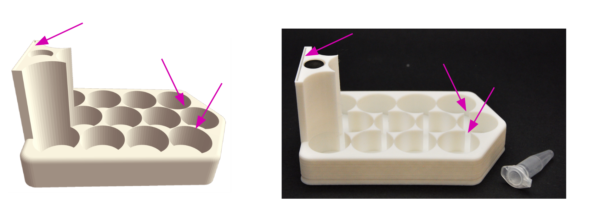
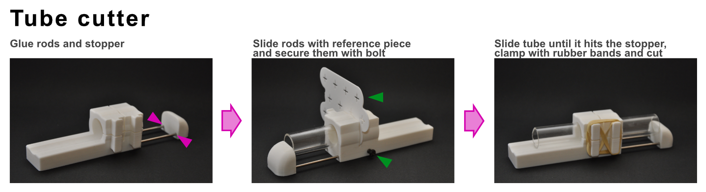
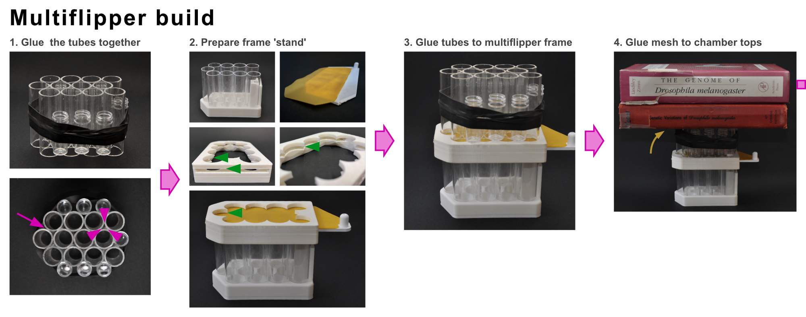
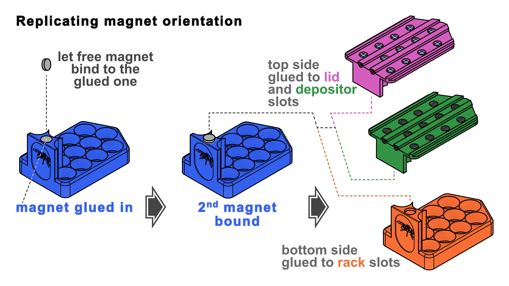

Instructions to assemble the Drosben components
[!CAUTION]
Assembling the hardware brings chemical and mechanical hazards. We give recommendations but you follow them at your own risk.
THIS IS NOT A RISK ASSESSMENT. Some precautions are mentioned, but you must do your own risk assessment.
You will need:
Component costs1
| Component | Quantity | Required2 | Cost per usage unit |
|---|---|---|---|
| (initial materials) | 1 | Per lab | £71.00 |
| Depositor stencil | 1 | Per lab | £0.14 |
| Multiflipper | 1 | Per user | £38.91 |
| Slider | 1 | Per user | £0.50 |
| Depositor | 1 | Per user | £3.49 |
| Rack | 2 | Per cohort | £2.28 |
| Lid | 1 | Per cohort | £0.90 |
Materials costs
| Material | Quantity (per pack) | Unit | Price3 |
|---|---|---|---|
| PLA filament | 1000 | g | £18.00 |
| Acrylic tube | 1 | count | £3.00 |
| Nail shaft | 200 | count | £3.50 |
| N52 magnet 12 x 3 mm | 50 | count | £12.00 |
| N52 magnet 10 x 3 mm | 50 | count | £12.00 |
| Woven wire mesh | 3600 | cm² | £20.00 |
| Super glue gel | 30 | g | £4.00 |
| Acrylic cement | 50 | ml | £9.00 |
| Rubber sheet | 100 | cm² | £3.00 |
Recipes
| Component | Material | Quantity | Unit | Cost per component |
|---|---|---|---|---|
| Multiflipper | PLA filament | 40 | g | £0.72 |
| Acrylic tube | 12 | count | £36.00 | |
| N52 magnet 10 x 3 mm | 4 | count | £0.96 | |
| Woven wire mesh | 120 | cm² | £0.67 | |
| Super glue gel | 0.2 | g | £0.03 | |
| Acrylic cement | 3 | ml | £0.54 | |
| Depositor | PLA filament | 21 | g | £0.38 |
| Rubber sheet | 100 | cm² | £3.00 | |
| Nail shaft | 4 | count | £0.07 | |
| Super glue gel | 0.3 | g | £0.04 | |
| Lid | PLA filament | 32 | g | £0.58 |
| N52 magnet 12 x 3 mm | 1 | count | £0.24 | |
| Nail shaft | 4 | count | £0.07 | |
| Super glue gel | 0.1 | g | £0.01 | |
| Rack | PLA filament | 50 | g | £0.90 |
| N52 magnet 12 x 3 mm | 1 | count | £0.24 | |
| Slider | PLA filament | 26 | g | £0.47 |
| Nail shaft | 1 | count | £0.02 | |
| Super glue gel | 0.1 | g | £0.01 | |
| Depositor stencil | PLA filament | 8 | g | £0.14 |
Tools
| Tool | Assumed available | Cost | Optional4 |
|---|---|---|---|
| Pliers (to clip nail heads) | yes | £10.00 | no |
| Cutter (to cut mesh and rubber sheet) | yes | £10.00 | no |
| 3D printer | yes | £140.00 | no |
| Silicon sheet, 0.5 mm thick (to glue the multiflipper) | no | £4.50 | no |
| Arc saw | yes | £10.00 | yes |
| 25 mm pipe cutter | yes | £50.00 | yes |
| 3D-printed tube cutter reference tool5 | yes | £1.50 | yes |
[!CAUTION] Most prints require the use of supports for floating structures. These need to be removed after printing using a flat screwdriver or a knife. Please use a cut resistant glove in the holding hand or a vise (but do not tighten it too much or you will crush the print).
[!CAUTION] Acrylic cements (i.e. Tensol 12, Anglosol 12) are highly flammable and release toxic fumes. Cyanoacrlylate glue also releases toxic fumes and any splatter or running drop may glue your fingers together or to the parts. Do all the gluing in a well-ventilated space and wear gloves.
Building the Racks
Printing
Our latest prints were printed in a Bambulab A1 mini with plain PLA after slicing in BambuStudio with:
- the base of the Rack facing the printer's bed;
- preset configuration 0.08 mm High Quality;
- support enabled (with support default settings).
The rack is the only model with very thin areas, where the tubes almost touch and in the sleeve to hold the label. We have not managed to print both faithfully - it seems to be either one or the other:

In our experience, hosting the tubes firmly does not need the full cylinder slot - the curved triangles are enough to keep the tubes secured. So we favour printing racks with functional sleeves, for which those settings work well.
Post-printing modifications
Building the Lids
Printing
Our latest prints were printed in a Bambulab A1 mini with plain PLA after slicing in BambuStudio with:
- the top side of the Lid facing the printer's bed;
- preset configuration 0.12 mm High Quality;
- support enabled (with support default settings).
Post-printing modifications
Before gluing, check that the nails enter the opening of the rails with adequate tolerance. If they are too tight, get narrower nails or scrape the inner walls of the rails with a needle or a round coping saw blade. Once you are satisfied, cut off the heas of four nails, add a drop of glue to the tips and push them into the rail's cavities until the nails' ends are flush with the rail openings. Do not glue the magnets yet.
Building the Multiflipper
Printing
Our latest prints were printed in a Bambulab A1 mini with plain PLA after slicing in BambuStudio with:
- the top side of the multiflipper (the one that will host the chambers) facing the printer's bed;
- preset configuration 0.2 mm standard;
- support enabled (with support default settings).
Post-printing modifications
Obtaining the tubes for the chambers
The chambers are made from acrylic tube of 25 mm external diameter and 2 mm wall thickness, 70-100 mm long.
The easiest way to obtain these is purchasing long tube at a local workshop or online retailer and ask them to cut them down for you. They typically offer cutouts starting at 100 mm in length, with a fee per cut. This is convenient and gets you cuts of the best quality. However, there are advantages to cutting your own tubes: you can make tubes shorter (100 mm makes a bulky, heavy multiflipper), and it saves money in cuts and total tube length. The cuts will not be so clean, though.
You can cut your tubes with a mitre or table saw, but doing this safely and without notching the tubes requires more than basic DIY skill so we will not cover it here. If you think you can do it, you probably do not need our help.
To cut the tubes yourself safely and with reasonably good results, you can use our tube cutter with reference model (printed with 0.12 mm High Quality presets and support enabled). This tool was copied from a design by YouTube user M.S. Idris, who shows how to use it here:

We added minor modifications so the clamp works with rubber bands (faster than bolts) and it includes stainless steel sliding bars (15 cm rods, 3 mm diameter) with a stopper and a M4 bolt to fix the length for repeated cutting:

You will need a pipe cutter to score the tube, as shown in M.S. Idris' video. Cutting can be done with an arc saw, a tenon saw or a dozuki saw (Japanese woodworking pull saw).
Gluing multiflipper frame, chambers and mesh
Once you have 12 acrylic tubes, you have to glue them to each other, then glue the ensemble of tubes to the multiflipper 3d-printed frame, and then glue the mesh on top:

To glue the chambers ensemble, arrange the tubes in the same 4 x 3 honeycomb configuration as the rack and multiflipper, and hold them using rubber bands. Make sure they are all flush with each other. Using a Pasteur pipette, a metal rod or a syringe, run a generous drop of glue along both sides of the touching tangent of each tube pair (magenta arrows in the image above). Let them dry following manufacturer's instructions.
We have tried five different glues:
- Acrylic cement (Tensol 12, Bostik) gives excellent results. Tubes are essentially welded clean. However, it releases nasty volatiles, takes long to dry (24 hours) and once opened, the bottle often dries up before you can use all the cement.
- Cyanoacrylate (SuperGlue) is strong but releases volatiles that react with the surface of the acrylic plate and frost it, reducing visibility. Do not use.
- Plastic cement (Poly Cement, Humbrol) is designed for polystyrene and ABS. It cures fast (1 hour) but it is weak. Do not use.
- Super Plastic Glue (Bondtech) bonds in seconds to minutes, is strong and does not frost the surface of the acrylic tube. It also releases nasty volatiles, but it is a good option.
- UV Resin Glue (DecorRom) is odorless, and cures after exposure to UV light (included with the glue). It is strong and the cured seal is clear. One must be careful with the eyes, but it is a good option.
To glue the chambers to the multiflipper frame, it is essential that the base of the tubes is flush with the slot for the slider (green arrows in the image above). Therefore, a stand to hold the chambers at the right height is necessary. This is done resting the chambers on the slider, protected from the glue with a thin silicone rubber mat, cut out using the slider as a stencil. Insert the slider and the silicone cutout into the slot of the multiflipper frame, with the silicone mat towards the top of the base. Place the group on a rack with tubes, so the rubber can be pushed against the top (ceiling) of the multiflipper frame.
Then run the glue bottle nozzle along the internal edge of the top side of the multiflipper (where the tubes will be glued to) and place the tube array there, supported by the slider (which is covered by the silicone mat so it does not become glued.
Once the chambers are glued into a single solid, cut a rectangle of mesh that covers the tube array (with several mm of margin around) and flatten it as much as possible. Place it on top of the silicone rubber mat, on a strong horizontal surface. Run the glue bottle tip along all the rims of the acrylic tubes, without overflowing the rim, and place the mesh on top. Protect it with another piece of silicone rubber (yellow arrow in the image above), put some weight on it and let the glue cure. Once the glue has cured, use the cutter or a scalpel to cut the mesh along the outer edge of the tube array, to have it flush with the tubes.
Check that the tubes are flush with each other on the open side. If the are not, sand the excess until they are (mounting sandpaper on the slider), with care so the surface does not tilt.
Lid and multiflipper: gluing the magnets
Glue two N52 disk magnets 10 x 3 mm to each round hole at the front of the multiflipper and the lids. Simply add a drop of cyanoacrylate glue gel to the slot for the magnet and place an N52 neodymium disk magnet (12 x 3 mm) there.
[!TIP]
IMPORTANT: You will want all your racks to have their magnets in the same orientation, so all your lids are compatible with any rack. But rare-earth magnets do not indicate their polarity. So, once you have glued the magnet to the first rack, use it as an indicator (once the glue has set!): let the next magnet you glue first attach to the glued magnet, add a drop of glue to the slot where it is going to go, and place it there in the required orientation as indicated in the schematic:

Slider
Print with the same settings as the multiflipper or the lid, with the top side on the printer's bed. No supports are needed.
Glue one nail into the hole at the tip, with the same precautions as in the rails of the lid and depositor (check tolerances first).
Depositor
Printing
Like the lid. Print as well a stencil, which can be a bit more relaxed (0.2 mm).
Post-printing modifications
Using the stencil , use a cutter or a scalpel to cut a piece of neoprene rubber around it. Make sure the cross openings for cutting the cuspid valves have the wider side facing upwards. Press firmly against the rubber with the stencil and cut deeply and slowly - if you stretch the rubber while cutting, the final shape will not match well the outline carved in the depositor. Once the perimeter has been cut, without moving the stencil, make cross cuts in all the indicated places to align the cuspid valves with the holes in the depositor. Use a stack of old paper or soft wood as a base so you can cut through without damaging the working surface.
Run the cyanoacrylate glue gel bottle nozzle along the surface of the well for the rubber mat (bottom side, the opposite one to the rails), and press the rubber mat against it. Put some weight on it and leave to cure.
Add nails like to the lid.
-
Prices were estimated in July 2026. ↩
-
The Depositor and Multiflipper could be shared between users, but for real scalability, it is better to assume they will not be. A rack can house cohorts of up to 180 flies (15 per tube). ↩
-
Prices have been ceiled to the nearest £1. These are realistic indicative prices, but the exact cost of the initial investment and component may change depending on the specific retailer and the configuration of the pack. Most components have been obtained from non-specialist online retailers, except the acrylic tubing and the woven wire mesh, which are respectively from Simple Plastics and The Mesh Company (both UK companies). ↩
-
Optional tools allow the user to buy 25 mm acrylic tubing in 1 m lengths and cut out their own segments for the multiflipper chambers. This makes the tubes, which are one of the most expensive parts, a bit cheaper (as each cut needs to be paid for separately). ↩
-
The model is within the 'Utilities' folder as 'tube_cutter_reference'. ↩